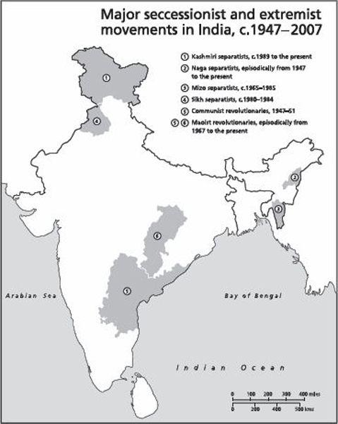

The last sentence is meant literally as well as metaphorically. Hindi cinema provides a stock of social situations and moral conundrums which widely resonate with the citizenry as a whole. But, over time, it has also made the Hindi language more comprehensible to those who previously never spoke or understood it. When imposed by fiat by the central government, Hindi was resisted by the people of the south and the east. When conveyed seductively by the medium of cinema and television, Hindi has been accepted by them. In Bangalore and Hyderabad Hindi has become the preferred medium of communication between those who speak mutually incomprehensible tongues. Finally, one might instance the banning of Hindi films, DVDs and videos by insurgents in the north-east: this, in its own way, is a considerable tribute to the part played by the Hindi film in uniting India.
In 1888 John Strachey wrote that he could never imagine that Punjab and Madras could ever form part of a single political entity. But in 1947 they did, along with many other provinces Strachey regarded as distinct ‘nations’. While in 1947 the unity might have been mostly political, in the decades since it has been shown also to be economic, cultural and, it must be said, emotional. Perhaps many Kashmiris and Nagas yet feel alien and separate. And perhaps some revolutionaries believe that India is a land of many nationalities. But the bulk of those who are legally citizens of India are happy to be counted as such. Some four-fifths of the population, living in some four-fifths of the country, clearly feel themselves to be part of a single nation.
One might think of independent India as being Europe’s past as well as its future. It is Europe’s past, in that it has reproduced, albeit more fiercely and intensely, the conflicts of a modernizing, industrializing and urbanizing society. But it is also its future in that it anticipated, by some fifty years, the European attempt to create a multilingual, multireligious, multiethnic, political and economic community.
Or one might compare India with the United States, a country justly celebrated as ‘the planet’s first multiethnic democracy’.40 Born nearly two centuries later, the Republic of India is today comfortably the world’s largest multiethnic democracy. However, the means by which it has regulated (and moderated) relations between its constituent ethnicities have been somewhat different. For, as Samuel Huntingdon has recently argued, the American nation has been held together by a ‘credal culture’ whose ‘central elements’ have included ‘the Christian religion, Protestant values and moralism, a work ethic, the English language, British traditions of law, justice, and the limits of government power, and a legacy of European art, literature, philosophy, and music’. Indeed, ‘America was created as a Protestant society just as and for some of the reasons Pakistan and Israel were created as Muslim and Jewish societies in the twentieth century.’
The United States is, of course, a nation of immigrants. For much of the country’s history the new groups that came in merged themselves with the dominant culture. ‘Throughout American history’, writes Huntingdon, ‘people who were not white Anglo-Saxon Protestants have become Americans by adopting America’s Anglo-Protestant culture and political values’. Of late, however, newer groups of immigrants have tended to maintain their distinct identities. The largest of these are the Hispanics, who live in enclaves where they cook their own food, listen to their own kind of music, follow their own faith and – most importantly – speak their own language. Huntingdon worries that if these communities are not quickly brought in to line, they will ‘transform America as a whole into a bilingual, bicultural society .
The older American model of assimilation was called ‘the melting-pot’. Individual groups poured all their flavours into the pot, then drank asingle, uniform – or uniformly tasting – drink. Now it appears that the society, and nation, are coming to resemble a ‘salad bowl’, with each group starkly standing out, different and distinctive in how it looks and behaves.
Huntingdon himself is less than enthusiastic about the idea of the salad bowl. For him, America has long been, and must always be, a ‘society with a single pervasive national culture’. He observes that Americans identify most strongly with that culture when the nation is under threat. War leads not merely to national consolidation, but also to cultural unity. The original American Creed was forged as a consequence of the wars against the Native Americans, the English colonists and the Southern States. The events of 9/11 once more brought patriotism and national solidarity to the fore. Concerned that these energies will dissipate, Huntingdon urges a more thoroughgoing return to the creed that, in his view, was responsible for ‘the unity and strength of my country’.41
Interestingly, Huntingdon’s views find an echo in recent statements by the prime minister of Australia, John Howard. That country too has been subject to successive waves of immigration, mostly or wholly European to begin with, but more recently of a markedly Asian character. Howard rejects the possibility of a plurality of cultures co-existing in Australia. ‘You ve got to have a dominant culture’, he says, adding, ‘Ours is Anglo-Saxon – our language, our literature, our institutions.’42
The Huntingdon–Howard line of reasoning is, of course, quite familiar to students of Indian history. It has been made in India by political ideologues such as M. S. Golwalkar and by political parties such as the Jana Sangh and the BJP. They have argued that India has ‘got to have a dominant culture’, and that this culture is ‘Hindu’. As it happened, those views were not endorsed by the founders of the Indian nation, by those who wrote the Indian Constitution and led the first few governments of independent India. Thus India became a salad-bowl nation rather than a melting-pot one.
And it has stayed that way. It has sustained a diversity of religions and languages, precisely the diversities that the likes of Howard and Huntingdon deem inimical to national survival and national solidarity. It has resisted the pressures to go in the other direction, to follow Israel and Pakistan by favouring citizens who follow a certain faith or speak a particular language.
The most eloquent tribute to the idea of India that I have come across rests in some unpublished letters of the biologist J. B. S. Haldane. In his native Britain, Haldane was a figure of considerable fame and some notoriety. In 1956, already past sixty, he decided to leave his post in University College London and take up residence in Calcutta. He joined the Indian Statistical Institute, became an Indian citizen, wore Indian clothes and ate Indian food. He also travelled energetically around the country, engaging with its scientists but also with the citizenry at large.43
Five years after Haldane had moved to India, an American science writer described him in print as a ‘citizen of the world’. Haldane replied:
No doubt I am in some sense a citizen of the world. But I believe with Thomas Jefferson that one of the chief duties of a citizen is to be a nuisance to the government of his state. As there is no world state, I cannot do this . . . On the other hand I can be, and am, a nuisance to the government of India, which has the merit of permitting a good deal of criticism, though it reacts to it rather slowly. I also happen to be proud of being a citizen of India, which is a lot more diverse than Europe, let alone the USA, USSR, or China, and thus a better model for a possible world organisation. It may of course break up, but it is a wonderful experiment. So I want to be labelled as a citizen of India.44
On another occasion Haldane described India as ‘the closest approximation to the Free World’. An American friend protested, saying his impression was that ‘India has its fair share of scoundrels and a tremendous amount of poor unthinking and disgustingly subservient individuals who are not attractive’.45 To this Haldane responded:
Perhaps one is freer to be as coundrel in India than elsewhere. So one was in the USA in the days of people like Jay Gould, when (in my opinion) there was more internal freedom in the USA than there is today. The ‘disgusting subservience’ of the others has its limits. The people of Calcutta riot, upset trams, and refuse to obey police regulations, in a manner which would have delighted Jefferson. I don’t think their activities are very efficient, but that is not the question at issue.46
Forty years down the line, what Haldane called a ‘wonderful experiment’ might be counted as a success, a modest success. Poverty persists in some (admittedly broad) pockets, yet one can now be certain that India will not go the way of sub-Saharan Africa and witness widespread famine. Secessionist movements are active here and there, but there is no longer any fear that India will follow the former Yugoslavia and break up into a dozen fratricidal parts. The powers of the state are sometimes grossly abused, but no one seriously thinks that India will emulate neighbouring Pakistan, where the chief of army staff is generally also head of government.
As a modern nation, India is simply sui generic. It stands on its own, different and distinct from the alternative political models on offer – be these Anglo-Saxon liberalism, French republicanism, atheistic communism, or Islamic theocracy. Back in 1971, at the time of the Bangladesh crisis, when India found itself simultaneously at odds with communist China, Islamic Pakistan and America, an Indian diplomat captured his country’s uniqueness in this way:
India is regarded warily in the West because she is against the concept of Imperialism and because she ‘invented’ the ‘Third World’.
India is looked on with suspicion in the ‘Third World’ because of her (subversive) sentiments for democracy, human rights, etc.; the Muslim world is wrathful because of our secularism.
The Communist countries regard India as insolent – and potentially dangerous – because we have rejected Communism as the prime condition for Progress.
We are, of course, on the side of God. But is God on our side?47
The writer whose lines open this book, the nineteenth-century poet Ghalib, thought that God was indeed on the side of India. All around him were conflict and privation, but doomsday had not yet come. ‘Why does not the Last Trumpet sound? asked Ghalib of a sage in the holy city of Benares. ‘Who holds the reins of the Final Catastrophe?’ This was the answer he got:
The hoary old man of lucent ken
Pointed towards Kashi and gently smiled.
‘The Architect’, he said, ‘is fond of this edifice
Because of which there is colour in life; He
Would not like it to perish and fall’.
Ghalib and his interlocutor were speaking then of India, the civilization. Speaking now of India, the nation-state, one must insist that its future lies not in the hands of God but in the mundane works of men. So long as the constitution is not amended beyond recognition, so long as elections are held regularly and fairly and the ethos of secularism broadly prevails, so long as citizens can speak and write in the language of their choosing, so long as there is an integrated market and a moderately efficient civil service and army, and – lest I forget – so long as Hindi films are watched and their songs sung, India will survive.